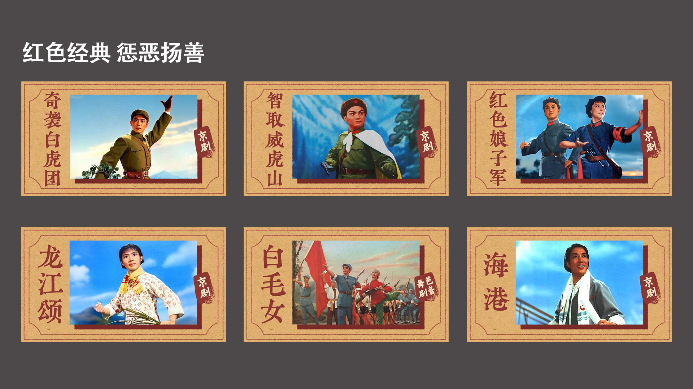
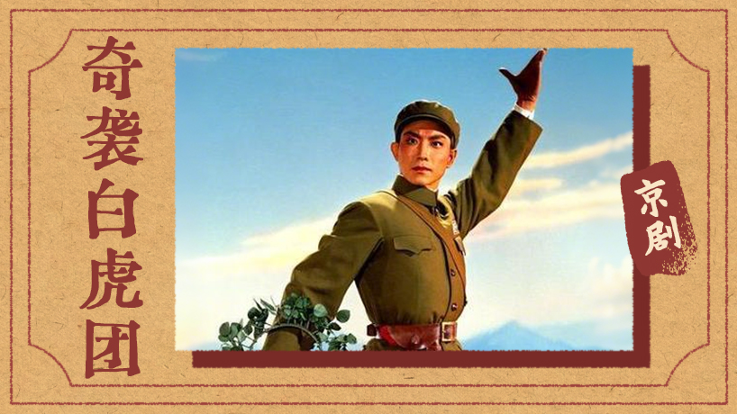
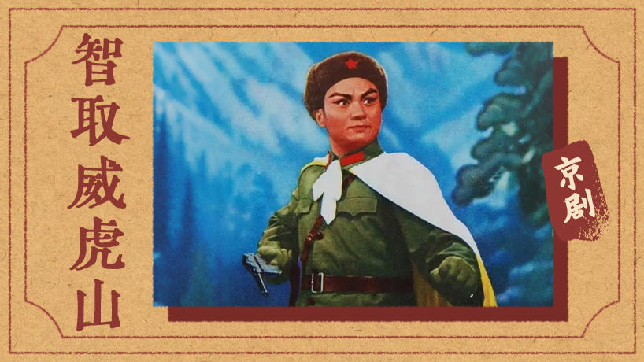
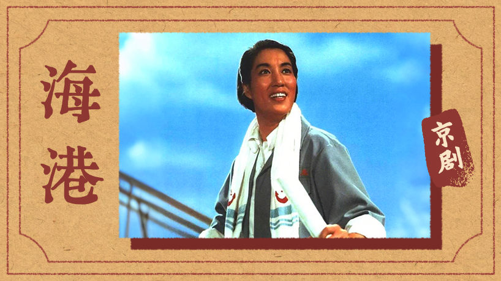
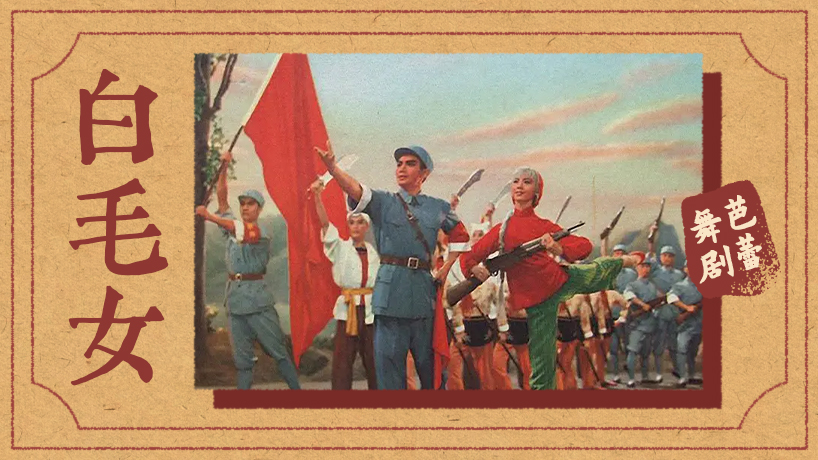
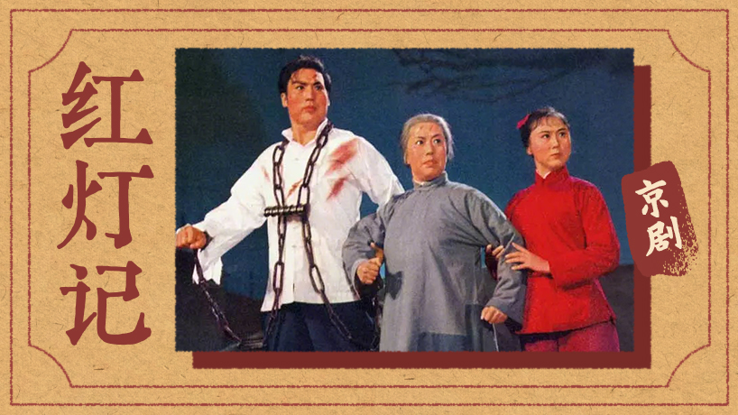
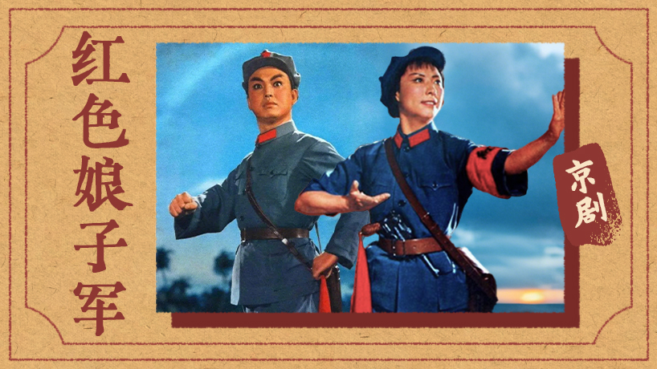
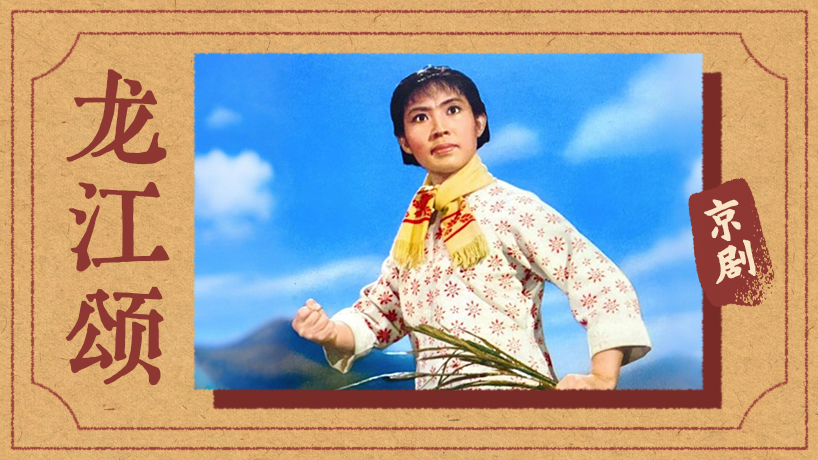

↓
Scroll to explore
Sohu Special Topic Design
红色经典 惩恶扬善
2024
专题内容以京剧、样板戏等经典红色戏剧影片为主，因此整体借鉴上世纪宣传海报和戏剧海报的视觉风格。采用仿旧纸张、印刷字体和复古边框设计，结合偏暖色调的纸张肌理强化历史年代感，使整体视觉更贴近影片所承载的时代背景。
设计关键词
仿旧纸张｜戏剧海报｜复古印刷｜年代氛围






